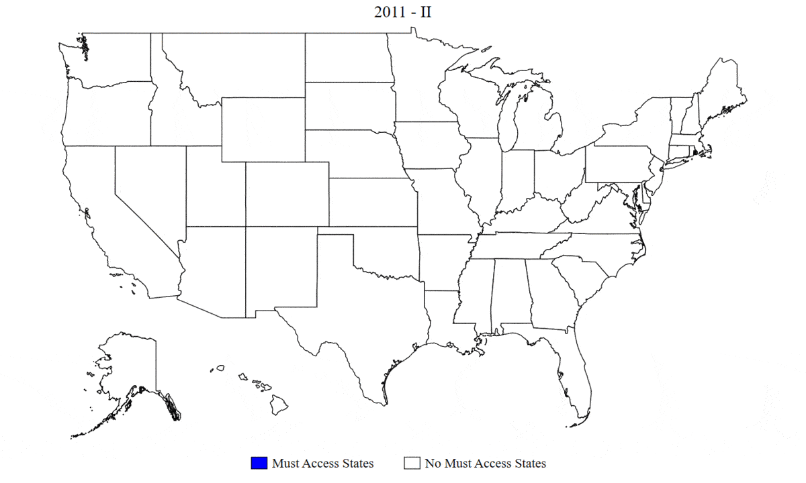
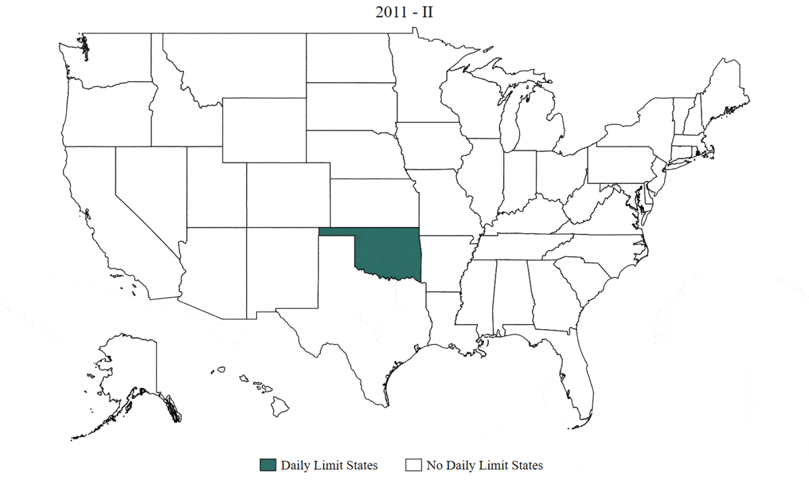

In this section I briefly present comments and in some cases the code about the implementation of specific tasks that aid my research projects,
together with their respective link to their GitHub space in my repository. If you are interested and want to know more send me an email at flozano@uga.edu.
In this project, we redesigned the discharge worksheets that physicians provide patients after surgery. The desing principal objective is to
increase the saliency of opioid addiction risks. Given a prescription on number of pills and days, the D3.js implementation would query the data and produce a calendar
with the marked final day of the prescription, but also, signaling with colors points of the distribution of prescriptions for that given surgical procedure.
This was the final project for Data Visualization (ENGR-E583). Several of its features are being implemented by Dr. Gabriel Brat, at the Harvard Medical
School Teaching Hospital institutions. The repository presents a Readme file with the main proposal and how to use it, with links to the dynamic tool and a already
completed worksheet. The project was joint work with Tim Whitson, Melisa Machuret, Neha Rawat and Himani Bhat.
[GitHub Repository]
[Live Example]
Discharge Tool

During 2020, the Health Policy team led by Prof. Kosali Simon, of which I was part, started a series of projects that attempted to estimates the effects COVID and the response policies was having in different aspects of our normal lives (i.e. mobility, employment, internet queries behavior, among others). In this repository I documented, the cleaning and processing of school closures using information collected by EdWeek, and linked to DoE information on school and school district characteristics. The final output showcased how closures were related to the population beeing affected, by school, then by school district, local government, and finally, state level interventions. This exercise provided detailed variation on the extent to which Americans were being affected by these decisions. [GitHub Repository]
Students Time

Students Time (Interventions)
")
I implement a routine for map creation using stata and posterior animation in a .gif file. The files on the right were produced following the routine.
The exercise is part of a wider project joint with Sumedha Gupta and Kosali Simon and benefited from the research assistance of Siddartha Rao.
The repository presents a Readme file to implement the python code as well as the Stata code that generate the individual maps.
[GitHub Repository]
Must Access PDMPs
Daily Limit PDMPs
 I implement web-scraping procedure to obtain team and player statistics from the NHL website.
The exercise is part of a research assitant assignment from Denvil Duncan.
The repository includes the .py files that scrape the information and hte resultin .csv's.
[GitHub Repository]